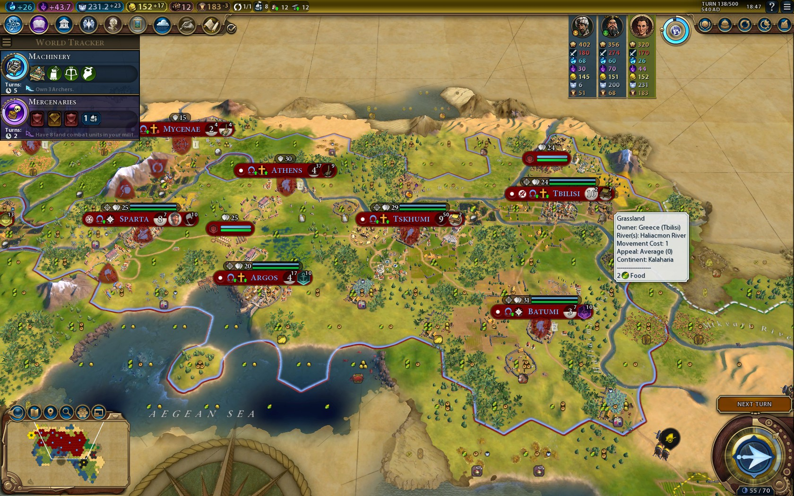

Posted on 2025-01-18 · 2 min read · Twenty Five · Civ VI · Civ VII · Computer games · Software
I’ve written some guides about how to play as various leaders in Sid Meier’s Civilization VI, covering Hojo, Alexander, Amanitore, and Qin in his Mandate of Heaven persona. I’m pretty sure I also wrote a guide to Gorgo at some point but all I can find are game screenshots I took one of the times that I played as her.

As such, I lost momentum on what would have been quite a nice writing project. However, with less than a month to go until Civ VII, it doesn’t seem as though writing those posts would even be useful for me.
Will I write similar posts for Civ VII when it comes out? Well, it looks as though the developers have planned for maximum replay-ability with a progression system for the leaders and civs, so it might be difficult to reliably pin down what it means to play as a particular leader. Your path of upgrades to leaders might be different to mine (and everybody else’s).
The new game also introduces a system where you change civilisation at particular points in history. I’m on board with that, I think that’s really interesting, but it further diminishes the role of the leaders and the civs in determining what makes a successful play-through.
So it remains to be seen whether I’ll write anything about Civ VII. I will definitely be playing it - very much team pre-order over here! It feels like learning to play Civ VII will be less about deciding how your civ and leader lean into particular game systems and more about using the resources around you in a consistent way to get good results every time. I’m sure after a while certain leaders will reveal themselves to be especially strong in given situations, and that later era civs will give you an opportunity to either consolidate a strong position or recover from a weaker one. That’s probably when the guides will need to be written.
For now though, thanks to that missing draft of the Gorgo post, my Civ guides are on hold!
See Also
- A Realisation
- Fun With Chat-GPT
- Albums Matter
- Parquet Courts, Sympathy For Life
- Gluten Free Toad In The Hole